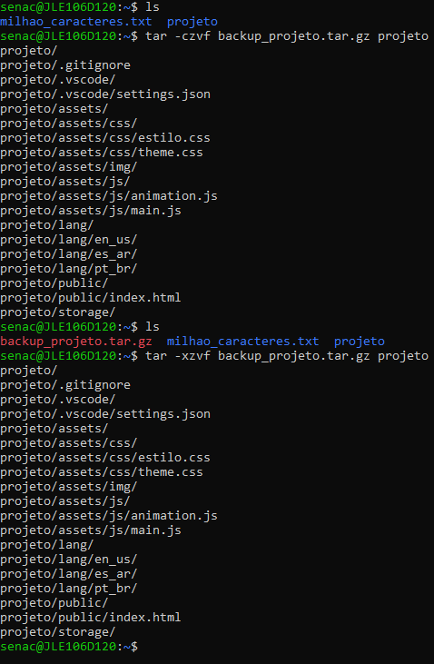
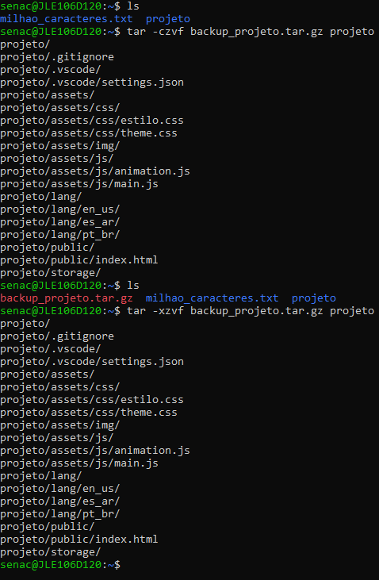
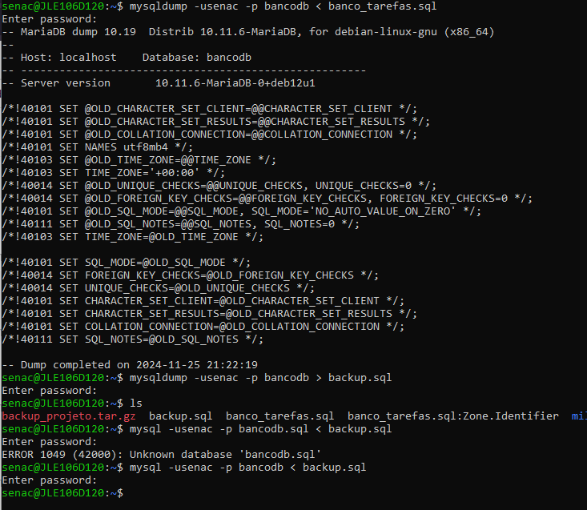
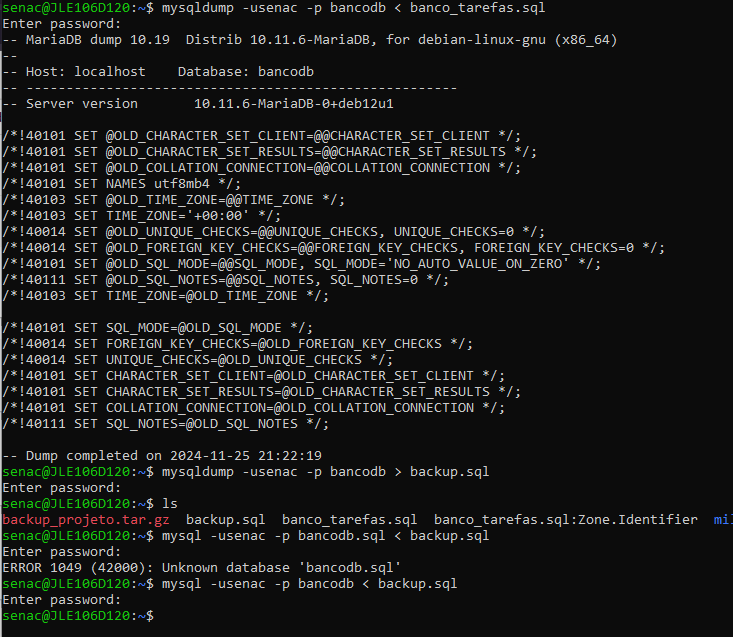

1
O que é uma publicação web, quais os dois tipos de aplicações existentes e suas principais diferenças.
R: Uma publicação web é quando a parte interativa com o usuário esta em um navegador.
Existe dois tipo de publicação web o estáticos e dinâmicos.O estáticos é algo mais simples que não tem necessidade e um backEnd, já o dinâmico é algo mais complexo e necessita de um backEnd para processar as informações.
Existe dois tipo de publicação web o estáticos e dinâmicos.O estáticos é algo mais simples que não tem necessidade e um backEnd, já o dinâmico é algo mais complexo e necessita de um backEnd para processar as informações.
2
O que é um domínio e um DNS.
R: Domínio é o nome do site que fica na url Ex: github.com.
DNS é meio que um tradutor que converte o domínio do site ou nome para um IP onde a maquina possa entender.
DNS é meio que um tradutor que converte o domínio do site ou nome para um IP onde a maquina possa entender.
3
Explique o que é um servidor compartilhado e um servidor dedicado, evidenciando suas vantagens e desvantagens.
R:Um servidor compartilhado é quando existem vários sites em um uníco servidor sua vantagem é que o preço por estar hospedado é baixo isso é bom maus sua desvantagem é que como tem varios sites em um uníco servidor pode ter falhas de segurança e se o servidor cair todos os sites cai junto.
Um servidor dedicado é um servidor dedicado apenas um site sua vantagem é a segurança e potencia total ao site mas sua desvantagem é o alto custo de mantar apenas grandes empresas e sites com grande acesso diário tem servidores dedicados.
Um servidor dedicado é um servidor dedicado apenas um site sua vantagem é a segurança e potencia total ao site mas sua desvantagem é o alto custo de mantar apenas grandes empresas e sites com grande acesso diário tem servidores dedicados.
4
O que é um servidor web, explique os dois principais servidores. Como fazer o backup de um projeto de forma compactada. Bem como restaurá-la.
R: Um servidor web é uma maquina responsável por armazenar e entregar os arquivos dos sites para o navegador.Os principais servidores web são o Apache e o CloudFlare.


5
O que é um servidor de banco de dados, explique como fazer o backup e restaurar esse backup
R: Um servidor de banco de dados é onde armazena dados para aplicações e utilizar dados e manipular.


6
O que é um serviço ssh, e como ele permite acessar um servidor web para transferir arquivos de uma máquina local e o servidor.
R: um serviço ssh é como uma ponte segura entre a maquina do usuário e o servidor.
EX acessar servidor: "ssh usuario@ip_do_servidor"
EX transferir arquivos locao para o servidor: "scp index.html user@192.168.1.100:/var/www/html/"
EX acessar servidor: "ssh usuario@ip_do_servidor"
EX transferir arquivos locao para o servidor: "scp index.html user@192.168.1.100:/var/www/html/"
7
Explique o que é um Linux e cite as principais distribuições usadas como servidor web.
R: Linux é um sistema operacional de computadores de software aberto ou open-sorc usaodo para aplicações web.
As principais distribuições usadas são o Ubunto, Debian, Red Hat.
As principais distribuições usadas são o Ubunto, Debian, Red Hat.
8
Explique alguns comando básicos do Linux.
sudo apt update # Ele verifica se tem atualização
sudo apt upgrade # Atualiza o sistema operacional
comando --help # mostra um manual do comando, explica como usar cada parâmetro. Em outras distibuições podemos usar o `man comando`
login nome_usuario # Loga com um usuário
exit # Sai do usuário atual.
sudo apt install nome_de_um_programa # instala um programa
sudo apt upgrade # Atualiza o sistema operacional
comando --help # mostra um manual do comando, explica como usar cada parâmetro. Em outras distibuições podemos usar o `man comando`
login nome_usuario # Loga com um usuário
exit # Sai do usuário atual.
sudo apt install nome_de_um_programa # instala um programa